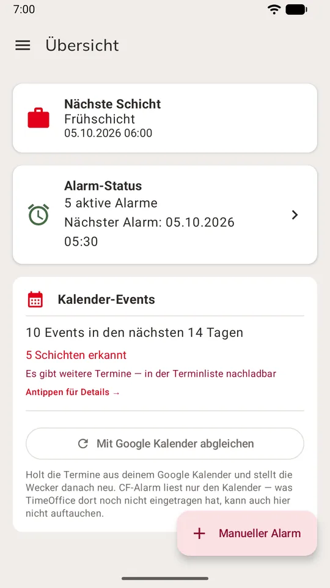
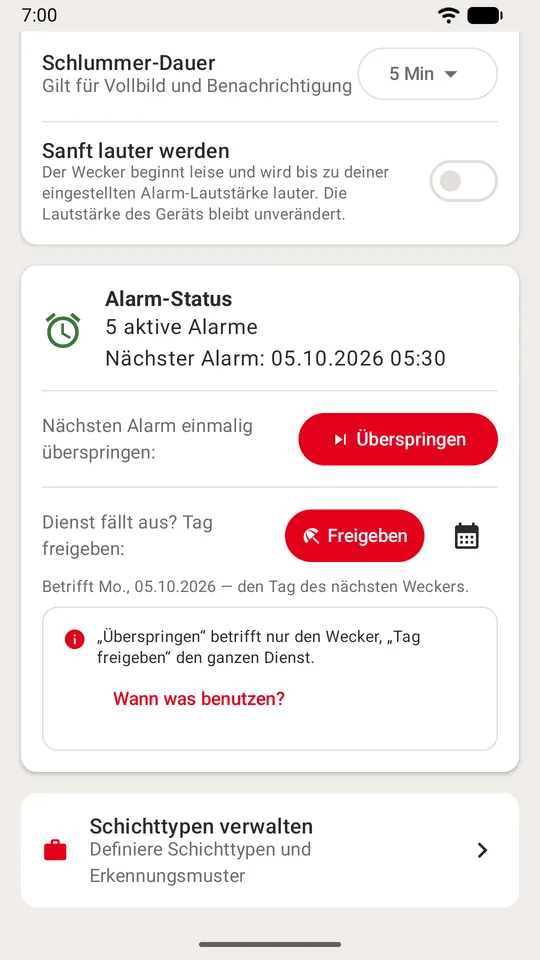
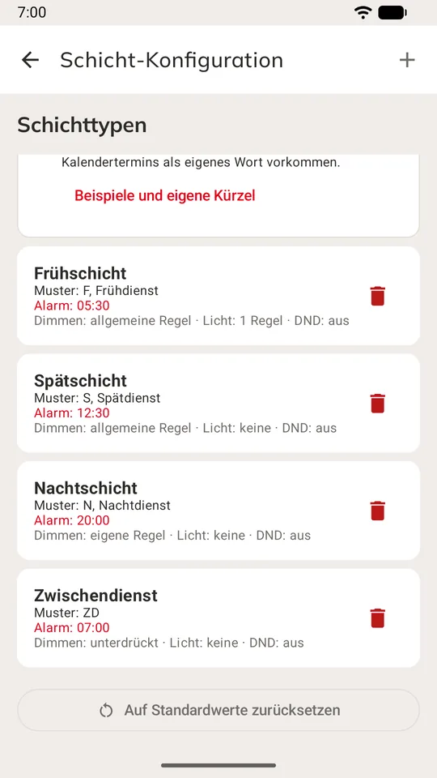
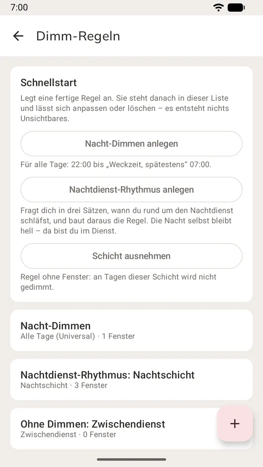
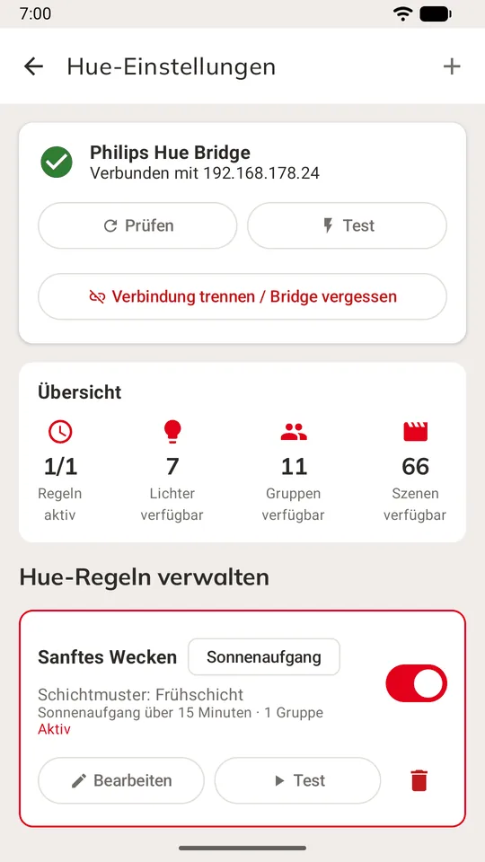
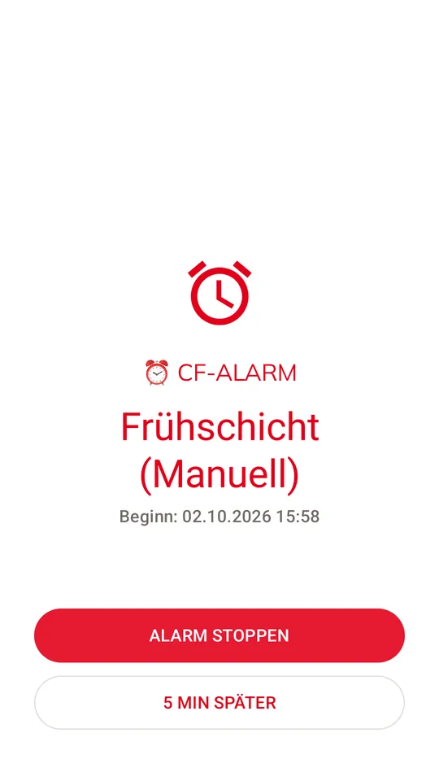

Wecker aus deinem Dienstplan
CF-Alarm liest den Dienstplan in deinem Google Kalender und stellt dir für jede Schicht den passenden Wecker. Ändert sich der Plan, zieht der Wecker nach – du musst nichts abtippen.
Gemacht für den Schichtdienst, zum Beispiel in der Pflege: Wer seinen Dienstplan über TimeOffice in den Google Kalender bekommt, ist hier richtig.

Im Video
So funktioniert es
- Dein Dienstplan steht im Google Kalender – zum Beispiel, weil TimeOffice ihn dort einträgt. Jeder Dienst ist ein Termin, im Titel steht sein Kürzel, etwa „F“ oder „Frühdienst“.
- CF-Alarm erkennt die Schichten an diesen Kürzeln. Jeder Schichttyp hat eine eigene Weckzeit. Kürzel, die die App noch nicht kennt, schlägt sie dir zum Zuordnen vor – geraten wird nichts.
- Die Wecker stellen sich selbst – für so viele Tage im Voraus, wie du einstellst (7 bis 90). Im Hintergrund gleicht die App regelmäßig ab und drei Stunden vor jedem Wecker noch einmal.
CF-Alarm erkennt Schichten, keine beliebigen Termine. Für einen Kalender mit Arztterminen und Geburtstagen ist sie nicht gedacht.
Was die App kann
⏰ Wecken
- Automatische Wecker je Schichttyp, mit Kürzel-Vorschlägen aus deinem echten Kalender
- Überspringen lässt den nächsten Wecker einmal aus, Tag freigeben streicht einen ausgefallenen Dienst
- Manueller Alarm für Tage, die nicht im Plan stehen
- Schlummer-Dauer wählbar, auf Wunsch sanft lauter werdender Weckton
- Stille Schicht: kein Weckton, aber Dimmen und „Nicht stören“ richten sich trotzdem nach ihr
- Hinweis, wenn eine Schicht dazukommt, sich verschiebt oder wegfällt
🌙 Ruhe
- Schicht-Dimmer: dunkelt den Bildschirm zu deinen Schlafzeiten ab, über Regeln je Schicht – mit Vorlagen wie „Nacht-Dimmen“ und „Nachtdienst-Rhythmus“
- „Nicht stören“ automatisch (ab Android 11): während der Schlafzeit oder der Dienstzeit, was stumm bleibt, entscheidest du
- Rufbereitschaft: an solchen Tagen endet „Nicht stören“ zu einer festen Uhrzeit, und die App schaut stündlich in den Kalender
💡 Licht
- Philips Hue: eine Szene aus deiner Hue-App, eigene Farben oder ein langsamer Sonnenaufgang – je Schichttyp
- Das automatische Ausschalten liegt auf der Bridge und greift auch, wenn du schon aus dem Haus bist
✅ Verlässlichkeit
- Der System-Status zeigt, was einen Wecker verhindern kann, und führt zur passenden Einstellung
- Nach Neustart und Update stellt die App ihre Wecker selbst wieder her
- Hintergrunddienste pausieren: ein Schalter für längere Abwesenheit
- Einstellungen als Datei sichern und einspielen; auf einem neuen Handy meldet die App dich ab Android 9 selbst wieder an
Einblicke

Wecker 
Schichttypen 
Schicht-Dimmer 
Philips Hue 
Weckbildschirm
Daten und Datenschutz
- Die App liest deinen Kalender nur – sie ändert und löscht nichts darin.
- Keine Werbung, keine Analyse-Dienste, keine eigenen Server.
- Auf dem Gerät gespeichert werden die erkannten Schichten mit ihren Uhrzeiten, keine Termininhalte. Der Zugang zum Google-Konto liegt verschlüsselt auf dem Gerät.
Alles Weitere steht in der Datenschutzerklärung.
Am Test teilnehmen
CF-Alarm wird von einer Einzelperson in der Freizeit entwickelt und ist noch nicht öffentlich im Play Store. Wer mittesten möchte, schreibt eine kurze Nachricht an cfischer@csj.de und bekommt einen Link für den Testzugang bei Google Play.
Das brauchst du: ein Android-Handy ab Version 8.0, ein Google-Konto mit einem Kalender, in dem deine Dienste stehen, und für die Lichtsteuerung eine Philips Hue Bridge im selben WLAN.
Probleme und Wünsche gehen am einfachsten direkt aus der App: System-Status → Karte „Debug-Informationen“ → „Logs an Entwickler senden“. Mehr dazu unter Hilfe.